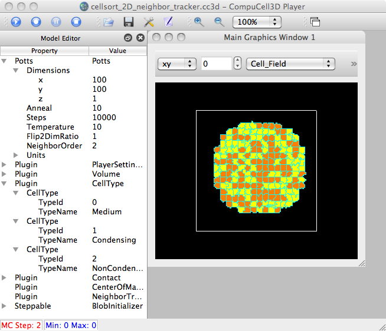
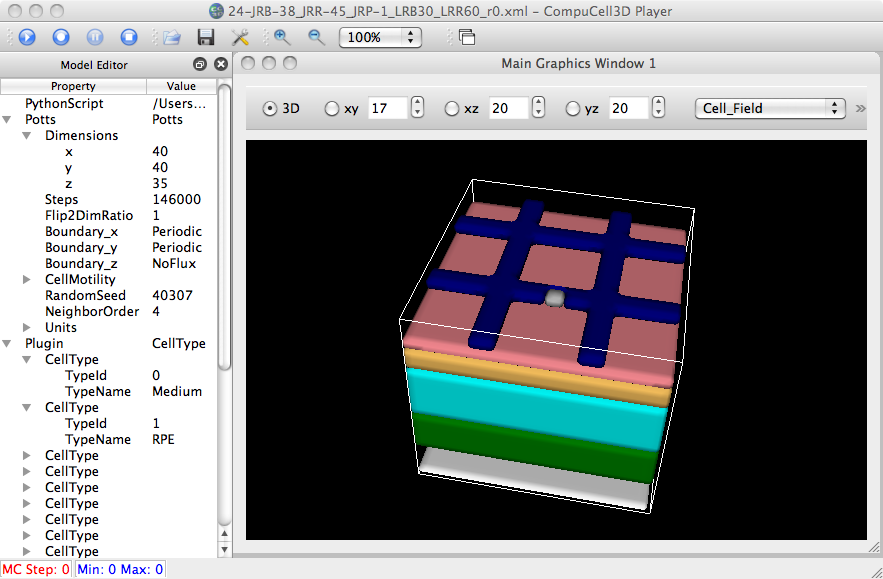

Commenting out certain plugins do not make a difference, and certain others cause Segmentation
fault or throw a BasicException and crashes. In no case, would the simulation happen, in
some way. What is the suggested course of action?
Thanks,
Suresh
-----Original Message-----
From: Maciej Swat
Sent: Tuesday, June 07, 2011 7:13 AM
To: Thiagarajan, Suresh
Cc: mswat...; Sablauer, Andras
Subject: Re: running CNV simulation on the cluster
It is hard to see what the problem is without having access to the
machine. What I would do is to try commenting out steppables/plugins in
the xml until you find the one that causes problems. When you locate it
let me know which one it is then I might be able to help more. So the
neighbor tracker example works on a cluster I assume?
On 6/6/2011 3:13 PM, Thiagarajan, Suresh wrote:
Hi Maciej,
We are using 3.4.2 because that's what Abbas wanted us to run it on. He said he's to make changes
to make it run on later versions.
Yes, I can run the examples_pythonTutorial/cellsort_2D_NeighborTracker simulations. I've
attached the the pythonsetupscripts folder (rename to .rar after download. I's afraid our firewall
might block it) from the build here.
Please, let me know if you need further details.
Thanks,
Suresh
-----Original Message-----
From: Maciej Swat
Sent: Monday, June 06, 2011 2:01 PM
To: Thiagarajan, Suresh
Cc: mswat...; Sablauer, Andras
Subject: Re: running CNV simulation on the cluster
Hi Suresh
Can you run examples_pythonTutorial/cellsort_2D_NeighborTracker? I think
the problem might be with how python wrappers have been generated. Can
you send me the content of pythonSetupScripts directory (zip would be
ok)? Also are you using 3.4.2? Why not 3.6.0?
On 6/6/2011 1:56 PM, Thiagarajan, Suresh wrote:
Hi Maciej,
I have problems running the CNV simulation on the cluster. The compilation goes on fine and I can even
execute the Demo simulation. I get the following error while trying to run the CNV simulation:
Unexpected Error: Traceback (most recent call last):
File "pythonSetupScripts/CompuCellPythonSimulationNewPlayer.py", line 16, in<module>
execfile(CompuCellSetup.simulationPaths.simulationPythonScriptName)
File "/nfs_exports/linux-file1/home/asablgrp/sthiagar/CC3D/CC3D3.4.2_CNV/
Source/angio_growth_14032011_04_33_56.py", line 65, in<module>
CompuCellSetup.mainLoop(sim,simthread,steppableRegistry)
File "/home/sthiagar/BuildFolder/CC3D3.4.2_CNV_BUILD/pythonSetupScripts/CompuCellSetup.py",
line 1083, in mainLoop
return mainLoopNewPlayer(sim, simthread, steppableRegistry, _screenUpdateFrequency )
File "/home/sthiagar/BuildFolder/CC3D3.4.2_CNV_BUILD/pythonSetupScripts/CompuCellSetup.py",
line 881, in mainLoopNewPlayer
steppableRegistry.step(i)
File "/home/sthiagar/BuildFolder/CC3D3.4.2_CNV_BUILD/pythonSetupScripts/PySteppables.py",
line 58, in step
steppable.step(_mcs)
File "/nfs_exports/linux-file1/home/asablgrp/sthiagar/CC3D/CC3D3.4.2_CNV/Source
/angio_growth_steppables_14032011_04_33_56.py", line 221, in step
for neighborSurfaceData in cellNeighborList:
File "/home/sthiagar/BuildFolder/CC3D3.4.2_CNV_BUILD/pythonSetupScripts/PySteppables.py",
line 229, in next
self.neighborCell = self.nsdItr.getCurrentRef().neighborAddress
AttributeError: 'SwigPyObject' object has no attribute 'neighborAddress
I can execute the same simulation fine on my Ubuntu machine. What do you think is the problem?
Thanks,
Suresh

Works fine for this 2D sim in examples_pythonTutorial.

After building cc3D 3.4.2, can run their sim on OSX... HOWEVER, only up to the 1st 'Step' (0th MCS) - clicking 'Step' a 2nd time results in the very same error that Suresh reported.
Some debugging...
So from where does the 'neighborAddress' method originate anyway? In this case, it turns out to be down
in the C++ code, in core/CompuCell3D/plugins/NeighborTracker/NeighborTracker.h, which we list here:
#include <set>
#include "NeighborTrackerDLLSpecifier.h"
namespace CompuCell3D {
class CellG;
//common surface area is expressed in unitsa of elementary surfaces not actual physical units. If necessary it may
//need to be transformed to physical units by multiplying it by surface latticemultiplicative factor
class NEIGHBORTRACKER_EXPORT NeighborSurfaceData{
public:
NeighborSurfaceData(CellG * _neighborAddress=0,int _commonSurfaceArea=0)
:neighborAddress(_neighborAddress),
commonSurfaceArea(_commonSurfaceArea)
{}
///have to define < operator if using a class in the set and no < operator is defined for this class
bool operator<(const NeighborSurfaceData & _rhs) const{
return neighborAddress < _rhs.neighborAddress;
}
///had to do this dirty trick to work around a problem that iterators of a set give access in read-only mode
///Note : You should NEVER change this way class members that are used in <operator this will corrupt set container
///CAUTION: DO NOT TRY TO MODIFY pixelIndex - you will corrupt set container
void incrementCommonSurfaceArea(const NeighborSurfaceData & _neighborSurfaceData )const
{
++( (const_cast<NeighborSurfaceData&>(_neighborSurfaceData)).commonSurfaceArea);
}
///Note : You should NEVER change this way class members that are used in <operator this will corrupt set container
void decrementCommonSurfaceArea(const NeighborSurfaceData & _neighborSurfaceData )const
{
--( (const_cast<NeighborSurfaceData&>(_neighborSurfaceData)).commonSurfaceArea);
}
bool OKToRemove()const{return commonSurfaceArea==0;}
bool operator==(const NeighborSurfaceData & _rhs)const{
return (neighborAddress==_rhs.neighborAddress) && (commonSurfaceArea==_rhs.commonSurfaceArea);
}
///members
int getCommonSurfaceArea(){return commonSurfaceArea;}
CellG * neighborAddress;
int commonSurfaceArea;
};
class NEIGHBORTRACKER_EXPORT NeighborTracker{
public:
NeighborTracker(){};
int trackerNumber(){return 1234321;}
~NeighborTracker(){};
std::set<NeighborSurfaceData > cellNeighbors; //stores ptrs to cell neighbors i.e. each cell keeps track of its neighbors
};
};
This class gets wrapped into Python-callable code (via SWIG), during a cc3D build, and ends up in the build dir under core/pyinterface/CompuCellPython/CompuCell.py (the associated SWIG file is in the source file: core/pyinterface/CompuCellPython/CompuCell.i).
Here are all the occurrences of 'neighborAddress' in CompuCell.py. We see that, in addition to
NeighborSurfaceData, other classes have it too.
heiland@dhcp-cs-244-118:~/dev/Glazier/cc3d-3.4.2/core/pyinterface$ grep neighboraddress */*.py CompuCellPython/CompuCell.py: def __init__(self, _neighborAddress = None, _commonSurfaceArea = 0): CompuCellPython/CompuCell.py: this = _CompuCell.new_NeighborSurfaceData(_neighborAddress, _commonSurfaceArea) CompuCellPython/CompuCell.py: __swig_setmethods__["neighborAddress"] = _CompuCell.NeighborSurfaceData_neighborAddress_set CompuCellPython/CompuCell.py: __swig_getmethods__["neighborAddress"] = _CompuCell.NeighborSurfaceData_neighborAddress_get CompuCellPython/CompuCell.py: if _newclass:neighborAddress = _swig_property(_CompuCell.NeighborSurfaceData_neighborAddress_get, _CompuCell.NeighborSurfaceData_neighborAddress_set) CompuCellPython/CompuCell.py: __swig_setmethods__["neighborAddress"] = _CompuCell.ContactLocalFlexData_neighborAddress_set CompuCellPython/CompuCell.py: __swig_getmethods__["neighborAddress"] = _CompuCell.ContactLocalFlexData_neighborAddress_get CompuCellPython/CompuCell.py: if _newclass:neighborAddress = _swig_property(_CompuCell.ContactLocalFlexData_neighborAddress_get, _CompuCell.ContactLocalFlexData_neighborAddress_set) CompuCellPython/CompuCell.py: __swig_setmethods__["neighborAddress"] = _CompuCell.ElasticityTrackerData_neighborAddress_set CompuCellPython/CompuCell.py: __swig_getmethods__["neighborAddress"] = _CompuCell.ElasticityTrackerData_neighborAddress_get CompuCellPython/CompuCell.py: if _newclass:neighborAddress = _swig_property(_CompuCell.ElasticityTrackerData_neighborAddress_get, _CompuCell.ElasticityTrackerData_neighborAddress_set) CompuCellPython/CompuCell.py: def __init__(self, _neighborAddress = None, _lambdaLength = 0.0, _targetLength = 0.0): CompuCellPython/CompuCell.py: this = _CompuCell.new_PlasticityTrackerData(_neighborAddress, _lambdaLength, _targetLength) CompuCellPython/CompuCell.py: __swig_setmethods__["neighborAddress"] = _CompuCell.PlasticityTrackerData_neighborAddress_set CompuCellPython/CompuCell.py: __swig_getmethods__["neighborAddress"] = _CompuCell.PlasticityTrackerData_neighborAddress_get CompuCellPython/CompuCell.py: if _newclass:neighborAddress = _swig_property(_CompuCell.PlasticityTrackerData_neighborAddress_get, _CompuCell.PlasticityTrackerData_neighborAddress_set) CompuCellPython/CompuCell.py: __swig_setmethods__["neighborAddress"] = _CompuCell.FocalPointPlasticityTrackerData_neighborAddress_set CompuCellPython/CompuCell.py: __swig_getmethods__["neighborAddress"] = _CompuCell.FocalPointPlasticityTrackerData_neighborAddress_get CompuCellPython/CompuCell.py: if _newclass:neighborAddress = _swig_property(_CompuCell.FocalPointPlasticityTrackerData_neighborAddress_get, _CompuCell.FocalPointPlasticityTrackerData_neighborAddress_set)
And here's the code where the basic error is thrown (in pythonSetupScripts/PySteppables.py):
208 class CellNeighborListAuto: 209 def __init__(self,_neighborPlugin,_cell): 210 print '----- PySteppables.py:CellNeighborListAuto:__init__: _neighborPlugin=',_neighborPlugin 211 self.neighborPlugin=_neighborPlugin 212 self.neighborTrackerAccessor=self.neighborPlugin.getNeighborTrackerAccessorPtr() 213 self.cell=_cell 214 def __iter__(self): 215 return CellNeighborIteratorAuto(self) 216 217 218 219 class CellNeighborIteratorAuto: 220 def __init__(self, _cellNeighborList): 221 import CompuCell 222 self.neighborTrackerAccessor = _cellNeighborList.neighborTrackerAccessor 223 self.cell=_cellNeighborList.cell 224 self.nsdItr=CompuCell.nsdSetPyItr() 225 self.nTracker=self.neighborTrackerAccessor.get(self.cell.extraAttribPtr) 226 self.nsdItr.initialize(self.nTracker.cellNeighbors) 227 self.nsdItr.setToBegin() 228 229 230 def next(self): 231 import pdb; pdb.set_trace() #rwh - I inserted this to do some debugging 232 if not self.nsdItr.isEnd(): 234 self.neighborCell = self.nsdItr.getCurrentRef().neighborAddress
note that in cc3D 3.6.0 but NOT 3.4.2, we have the following method in PySteppables:
class SteppableBasePy(SteppablePy):
def getCellNeighbors(self,_cell):
if self.neighborTrackerPlugin:
return CellNeighborListAuto(self.neighborTrackerPlugin,_cell)
Fwiw... heiland@129-79-58-155:~/dev/Glazier/cc3d-3.4.2$ sh test.sh CompuCell3D - version 3.4.2 Python 2.7.1 (r271:86882M, Nov 30 2010, 10:35:34) [GCC 4.2.1 (Apple Inc. build 5664)] on darwin Type "help", "copyright", "credits" or "license" for more information. >>> import PySteppables >>> dir(PySteppables) ['CellBoundaryPixelIterator', 'CellBoundaryPixelList', 'CellList', 'CellListIterator', 'CellNeighborIterator', 'CellNeighborIteratorAuto', 'CellNeighborList', 'CellNeighborListAuto', 'CellPixelIterator', 'CellPixelList', 'ClusterList', 'ClusterListIterator', 'CompartmentList', 'CompartmentListIterator', 'ElasticityDataIterator', 'ElasticityDataList', 'FocalPointPlasticityDataIterator', 'FocalPointPlasticityDataList', 'InternalFocalPointPlasticityDataIterator', 'InternalFocalPointPlasticityDataList', 'PlasticityDataIterator', 'PlasticityDataList', 'SimObjectPy', 'SteppableBasePy', 'SteppablePy', 'SteppableRegistry', '__builtins__', '__doc__', '__file__', '__name__', '__package__', 'forEachCellInInventory']
graphicsFrameWidget= <Graphics.GraphicsFrameWidget.GraphicsFrameWidget object at 0x121332b90>
parent= <Plugins.ViewManagerPlugins.SimpleTabView.SimpleTabView object at 0x11f9f4830>
THIS IS ROOT ITEM= CompuCell3D
ROOT ITEM DOMNode= CompuCell3D
FIELD TYPES= {'Cell_Field': 'CellField', 'VEGF1': 'ConField', 'MMP': 'ConField', 'Oxygen': 'ConField', 'VEGF2': 'ConField'}
DrawingFunctionName= drawCellField3D
MVCDrawModel3D.py INSIDE DRAW 3D
usedCellTypesList (1, 3, 5, 7, 8, 9, 10)
MVCDrawModel3D.py initCellFieldActors
FAST numberOfAttempts=56000
Number of Attempted Energy Calculations=15419
Step 0 Flips 3269/56000 Energy -4.94855e+07 Cells 4978 Inventory=4978
----- PySteppables.py:SteppableRegistry:step: self.steppableList= [<angio_growth_steppables_14032011_04_33_56.VolumeParamSteppable instance at 0x12144e128>]
----- PySteppables.py:SteppableRegistry:step: steppable.frequency= 1
----- PySteppables.py:CellNeighborListAuto:__init__: _neighborPlugin= <CompuCell.NeighborTrackerPlugin; proxy of <Swig Object of type 'CompuCell3D::NeighborTrackerPlugin *' at 0x121451a50> >
> /Users/heiland/dev/Glazier/cc3d-3.4.2/pythonSetupScripts/PySteppables.py(232)next()
-> if not self.nsdItr.isEnd():
(Pdb) bt
/Users/heiland/dev/Glazier/cc3d-3.4.2/player/Simulation/SimulationThread.py(259)run()
-> self.runUserPythonScript(self.pythonFileName,globalDict,localDict)
/Users/heiland/dev/Glazier/cc3d-3.4.2/player/Simulation/SimulationThread.py(250)runUserPythonScript()
-> execfile("pythonSetupScripts/CompuCellPythonSimulationNewPlayer.py")
/Users/heiland/dev/Glazier/cc3d-3.4.2/pythonSetupScripts/CompuCellPythonSimulationNewPlayer.py(16)<module>()
-> execfile(CompuCellSetup.simulationPaths.simulationPythonScriptName)
/Users/heiland/dev/Glazier/cc3d-3.4.2/Demos/StJude/angio_growth_14032011_04_33_56.py(65)<module>()
-> CompuCellSetup.mainLoop(sim,simthread,steppableRegistry)
/Users/heiland/dev/Glazier/cc3d-3.4.2/pythonSetupScripts/CompuCellSetup.py(1083)mainLoop()
-> return mainLoopNewPlayer(sim, simthread, steppableRegistry, _screenUpdateFrequency )
/Users/heiland/dev/Glazier/cc3d-3.4.2/pythonSetupScripts/CompuCellSetup.py(881)mainLoopNewPlayer()
-> steppableRegistry.step(i)
/Users/heiland/dev/Glazier/cc3d-3.4.2/pythonSetupScripts/PySteppables.py(60)step()
-> steppable.step(_mcs)
/Users/heiland/dev/Glazier/cc3d-3.4.2/Demos/StJude/angio_growth_steppables_14032011_04_33_56.py(226)step()
-> for neighborSurfaceData in cellNeighborList:
> /Users/heiland/dev/Glazier/cc3d-3.4.2/pythonSetupScripts/PySteppables.py(232)next()
-> if not self.nsdItr.isEnd():
(Pdb)